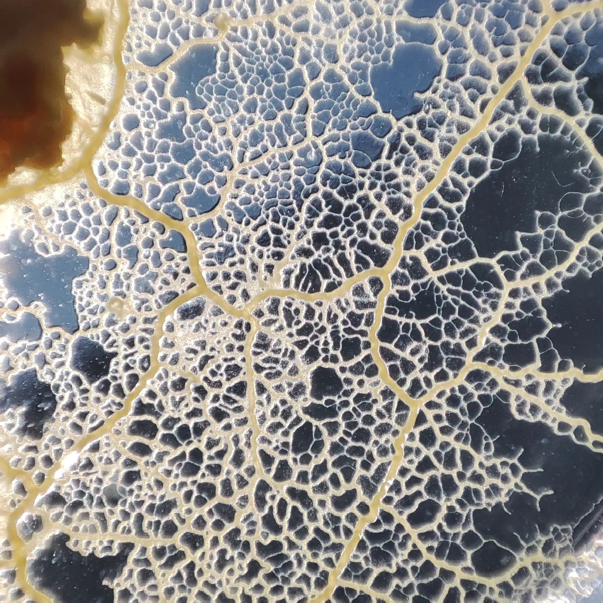
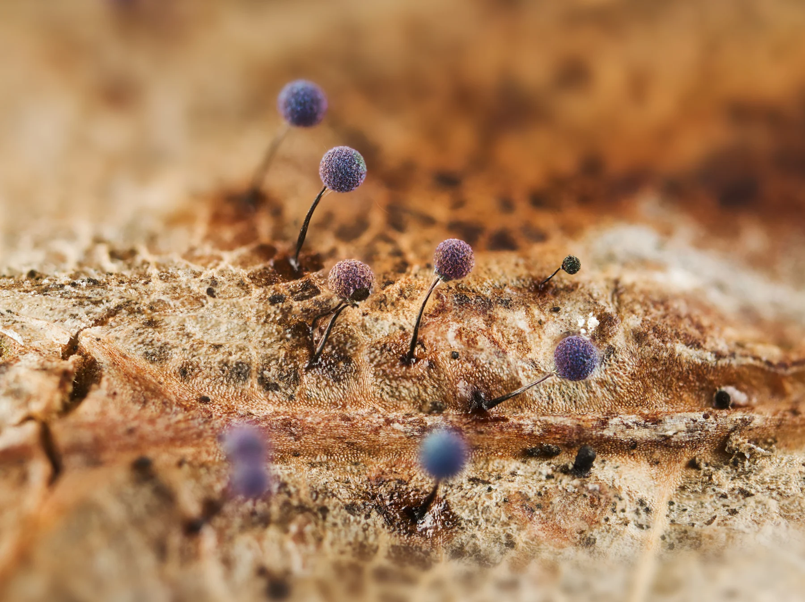

沒有大腦，
也能找到路。No brain.
Still finding a way.
從一張會移動的網開始，認識黏菌（Slime Molds）的生命、行為與科學。Meet slime molds: remarkable lives that invite us to rethink movement, cooperation and intelligence.

FIELD NOTE / 001© Tim Tim (VD fr) · CC BY-SA 4.0
從好奇，到看懂。A path through the world of slime molds.
第一次來，可以從 01 開始；也可以選擇最讓你好奇的問題。Start with chapter 01, or follow the question that catches your eye.
認識黏菌Meet slime molds
它到底是什麼？先認識兩種不同的生存方式。What are slime molds? Meet two very different ways of living.
生命週期Life cycle
從孢子到變形體，看看生命如何換一種模樣。Follow a life from a tiny spore to a growing plasmodium.
移動與覓食Movement & foraging
沒有心臟與大腦，如何運送養分、尋找食物？How does a body without a brain find food and move nutrients?
黏菌與科學Science & discovery
走進迷宮、網絡與記憶的經典研究。Explore experiments on mazes, networks and memory.
開始觀察Start observing
從一張照片、一個問題，開始你的微觀探索。Begin with a photograph, a question and a closer look.
一個名字，
不只一種模樣。One name. More than one form.
黏菌不是單一物種。照片中像小寶石的構造是子實體（Fruiting Bodies）；它與我們常看到的黃色、會移動的變形體（Plasmodium），呈現不同的生命樣貌。“Slime mold” is not one species. Jewel-like fruiting bodies and a spreading yellow plasmodium show very different sides of these organisms.
先問：這是什麼物種？正處於哪個階段？First ask: Which organism am I seeing, and at what stage?

© MicrocosmicWorld · CC BY-SA 4.0
把慢慢發生的事，
看得更清楚。Watch a different kind of intelligence.
從藝術家 Heather Barnett 的觀察出發，看黏菌如何把科學與創意連在一起。Heather Barnett introduces the science and creative possibilities of Physarum.
帶著問題看：影片中，哪些是直接觀察到的行為？哪些是人類對「智慧」的比喻？Watch with a question: Which behaviors are directly observed, and which descriptions are metaphors for intelligence?